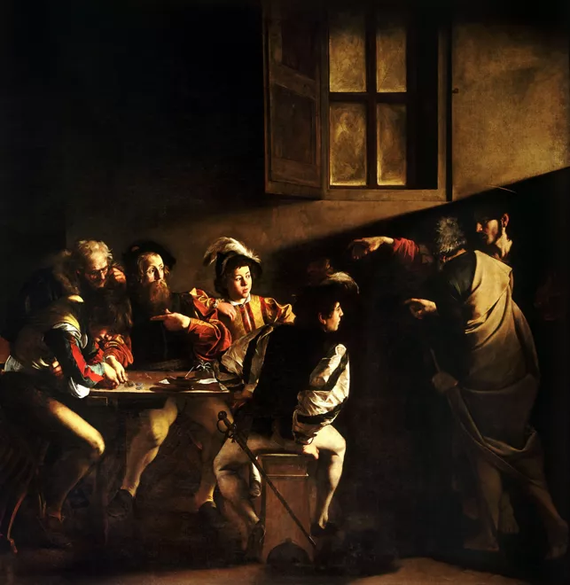
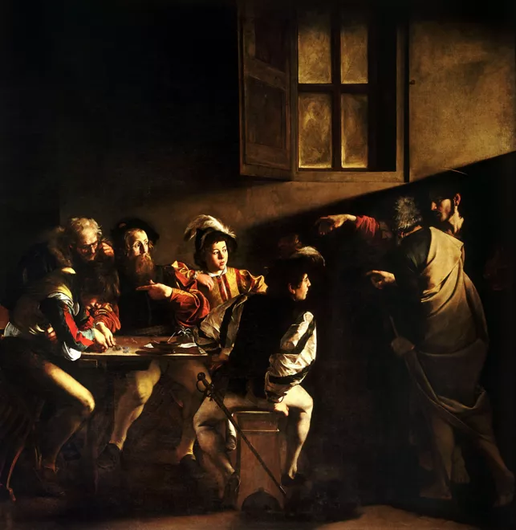

Making Iconic Art for Centuries to come
Gian Lorenzo Bernini, Francesco Borromini, and Caravaggio
| Bernini | Borromini | Caravaggio |
|---|---|---|
| The Fountain of the Four Rivers | S. Ivo alla Sapienza | The Calling of St. Matthew |
| The Chair of St. Peter's | S. Charles at the Four Fountains | Medusa |
 

Pictures in order. 1. The fountain of the Four Rivers 2. St.Charles at the Four Fountainis 3.The Calling of St. Matthew
link to information on the Chapel of the Holy Shroud